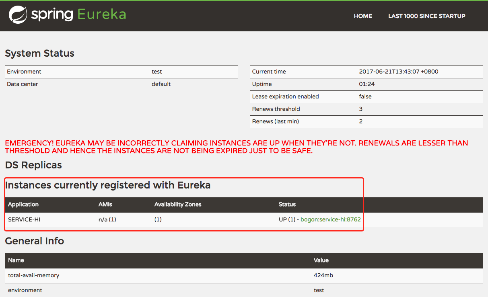

Eureka 是 Netflix 开源的一款提供服务注册和发现的产品。
Eureka 由两个组件组成： Eureka 服务器 和 Eureka 客户端。Eureka 服务器 用作服务注册服务器。Eureka 客户端 是一个 Java 客户端，用来简化与服务器的交互、作为轮询负载均衡器，并提供服务的故障切换支持。
官方对自己的定义是：
Eureka is a REST (Representational State Transfer) based service that is primarily used in the AWS cloud for locating services for the purpose of load balancing and failover of middle-tier servers.
通俗点讲什么是服务注册发现？
服务注册与发现就像是在一个聊天室，每个用户来的时候去服务器上注册，这样你的好友们就能看到你，你同时也将获取好友的上线列表。在微服务中，服务就相当于聊天室的用户，而服务注册中心就像聊天室服务器一样。
Eureka特性
- Eureka Server 具有服务定位/发现的能力，在各个微服务启动时，会通过 Eureka Client 向Eureka Server 进行注册自己的信息（例如网络信息）。
- 一般情况下，微服务启动后，Eureka Client 会周期性向 Eureka Server 发送心跳检测(默认周期为30秒)以注册/更新自己的信息。
- 如果 Eureka Server 在一定时间内(默认90秒)没有收到 Eureka Client 的心跳检测，就会注销掉该微服务点。
- 同时，Eureka Server 本身也是 Eureka Client，多个 Eureka Server 通过复制注册表的方法来完成服务注册表的同步从而达到集群的效果。
为什么选择 Eureka
1) 它提供了完整的 Service Registry 和 Service Discovery 实现
首先是提供了完整的实现，并且也经受住了 Netflix 自己的生产环境考验，相对使用起来会比较省心。
2) 和 Spring Cloud 无缝集成
我们的项目本身就使用了 Spring Cloud和 Spring Boot，同时 Spring Cloud 还有一套非常完善的开源代码来整合 Eureka，所以使用起来非常方便。
另外，Eureka 还支持在我们应用自身的容器中启动，也就是说我们的应用启动完之后，既充当了 Eureka 的角色，同时也是服务的提供者。这样就极大的提高了服务的可用性。
这一点是我们选择 Eureka 而不是 zk 、etcd 等的主要原因，为了提高配置中心的可用性和降低部署复杂度，我们需要尽可能地减少外部依赖。
3) Open Source
最后一点是开源，由于代码是开源的，所以非常便于我们了解它的实现原理和排查问题。
Eureka Server 使用介绍
在 Spring Boot 项目的 pom.xml 中加入 spring-cloud-starter-eureka-server
使用 Spring Cloud 需要在 pom.xml 中加入 Spring Cloud 的父级引用，让 Spring 帮我们管理依赖版本。
|
|
在application.yml中配置
Eureka 是一个高可用的组件，它没有后端缓存，每一个实例注册之后需要向注册中心发送心跳（因此可以在内存中完成），在默认情况下 Erureka Server 也是一个 Eureka Client，必须要指定一个 Server。
|
|
添加 Application.java 启动类 添加 @EnableEurekaServer 注解
|
|
Eureka Client 使用介绍
服务注册与服务发现都是使用 Eureka Client，所以在 Spring Boot 项目的 pom.xml 中加入
|
|
在 application.yml 中加入 Eureka 的 Server 配置
|
|
需要指明 spring.application.name，这个很重要，这在以后的服务与服务之间相互调用一般都是根据这个 name。
启动上边两个程序后，访问 http://localhost:8761/ 可以看到下边的页面，同时看到我们的 service-hi 也注册上来了。
